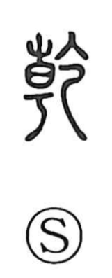

乾

Uncategorized
Kun: kawaku, kawakasu, hatameku | On: kan, ken
dry ・ to dry ・ heaven ・ the creative (qian)
Explanation
In early script forms, 乾 depicts a banner raised on a vehicle with a long, tubular streamer streaming in the wind—a vivid image of clear, brisk weather. From this comes the sense of dryness and the verbs “to dry.” Later, under the influence of the Yijing, 乾 became the name of the hexagram of pure yang—three solid lines above and three below—glossed as “Heaven’s movement is strong.” It came to symbolize the power and soundness of heaven, and thus acquired noble associations: heaven, ruler, father, robustness and toughness. In compounds, these symbolic values appear alongside the everyday “dry” sense; hence 乾坤 pairs 乾 with 坤 to signify heaven and earth.